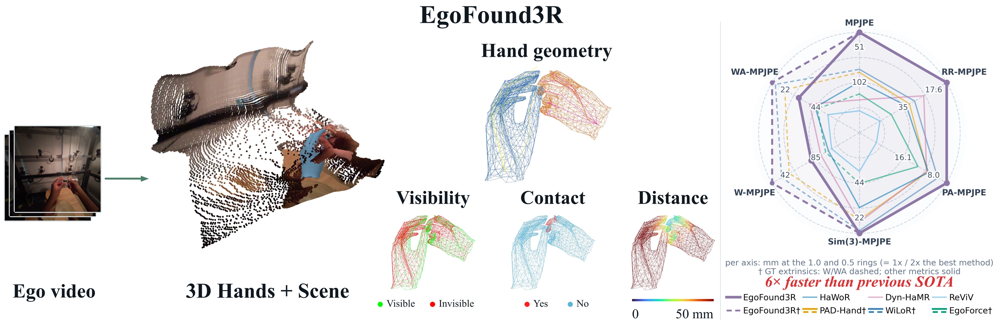
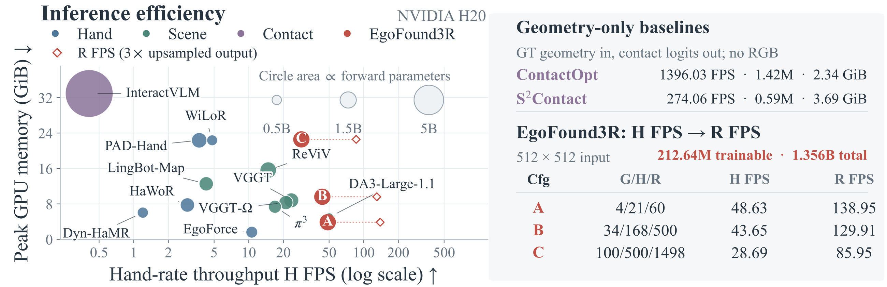
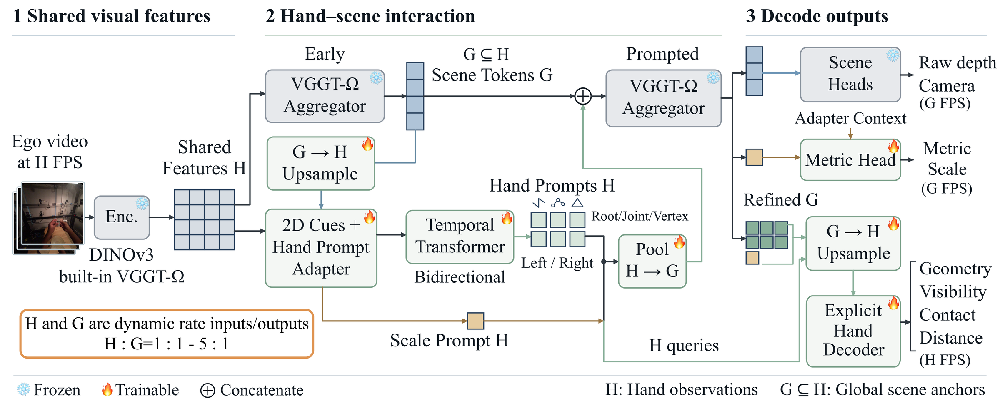

Demo 01.

Abstract
Egocentric video has become a primary source of supervision for embodied models, and its value rests on recovering hand motion in world coordinates, which camera motion and hand occlusion make difficult. Existing reconstruction pipelines typically separate hand and scene estimation, leave interaction attributes to separate task-specific models, and invoke several models per video, so no prior reconstruction model estimates these attributes and throughput becomes a practical constraint for large-scale annotation. We therefore introduce EgoFound3R, a unified end-to-end model that estimates world-space hand geometry in a metric scale shared with the scene, and predicts point-wise interaction attributes, including visibility, contact, and distance.
The model integrates three designs: (i) structured hand prompts that transfer pretrained geometric priors to world-space hand reconstruction; (ii) an explicit hand representation that decodes hand geometry and interaction attributes; and (iii) a shared-parameter multi-rate design that lowers inference cost. Together, these designs predict hand geometry and point-wise attributes in one pass. On OakInk-v2, TACO, and HOI4D, EgoFound3R reduces the mean per-joint position error (MPJPE) by 43.2%, 22.4%, and 11.6% over previous methods and predicts point-wise contact and distance alongside the geometry in the same pass, while attaining approximately 6× higher throughput.
Key Results
OakInk-v2 MPJPE
43.2%
Reduction over previous methods.
Hand-rate throughput
28.69 FPS
Default configuration at 512×512 on one NVIDIA H20.
Unified prediction
1 pass
Geometry, visibility, contact, and distance together.

Method Overview

Overview of EgoFound3R. Structured hand prompts and a prompted VGGT-Ω aggregator drive an explicit hand head that decodes hand geometry and interaction attributes, together with scene and metric heads that place the hands in world coordinates.
Demo Video
A representative in-the-wild egocentric sequence reconstructed end-to-end by EgoFound3R.
The original project page contains the complete demo and camera/world-space comparison galleries: EgoFound3R project page.
BibTeX
@misc{fu2026egofound3rendtoendegocentrichand,
title={EgoFound3R: End-to-End Egocentric Hand Reconstruction in World Space with Point-Wise Interaction Attributes},
author={Hongming Fu and Jingcheng Shi and Wenjia Wang and Binhua Zuo and Bo Zhao},
year={2026},
eprint={2610.01210},
archivePrefix={arXiv},
primaryClass={cs.CV},
url={https://arxiv.org/abs/2610.01210}
}